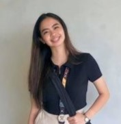

Nickaella Notra
Front-End Web Developer
Transforming ideas into captivating digital landscapes is my passion. My objective is to create websites that not only look stunning but also engage your audience and drive results. Whether you need a sleek corporate site, an e-commerce platform, or a dynamic portfolio, I have the expertise to bring your vision to life.
User experience is at the heart of everything I do. I am specialized in crafting intuitive and user-friendly interfaces that enhance usability and delight users at every interaction. Whether you're developing a mobile app, a software platform, or a responsive website, I ensure that every element is thoughtfully designed to create seamless and immersive user experiences.
Make a lasting impression with visually striking graphics that speak volumes about your brand. From logos and branding materials to marketing collateral and digital assets, my Creativity excel at capturing the essence of your brand and conveying it through captivating visuals. Let us elevate your brand identity and leave a lasting mark on your audience.
Francilyn has been an excellent person to work with. Her talent in designing produces works that uniquely reflects on her style and vision in designing. I highly recommend her.
Working with Francilyn has been an good pleasure. Not only are they easy to work with, the outcomes of her edited projects consistently exceed expectations, showcasing her skills.
During her internship she has demonstrated excellent skills in creating visual concepts, layouting, advertising and video editing with self-motivation to learn new skills.